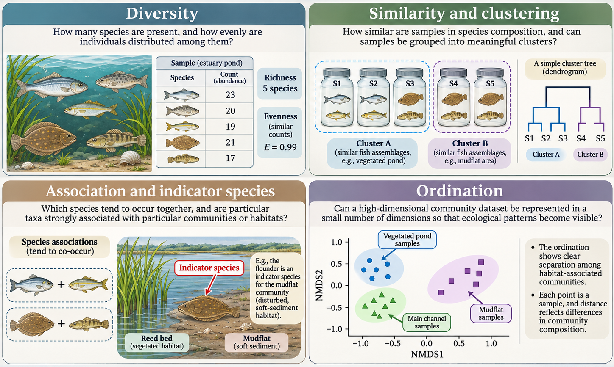
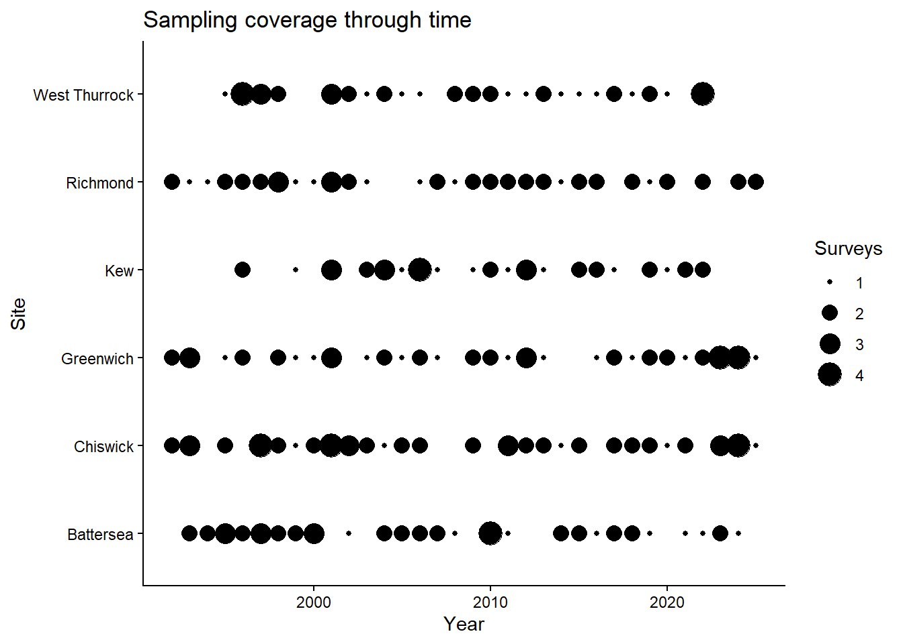
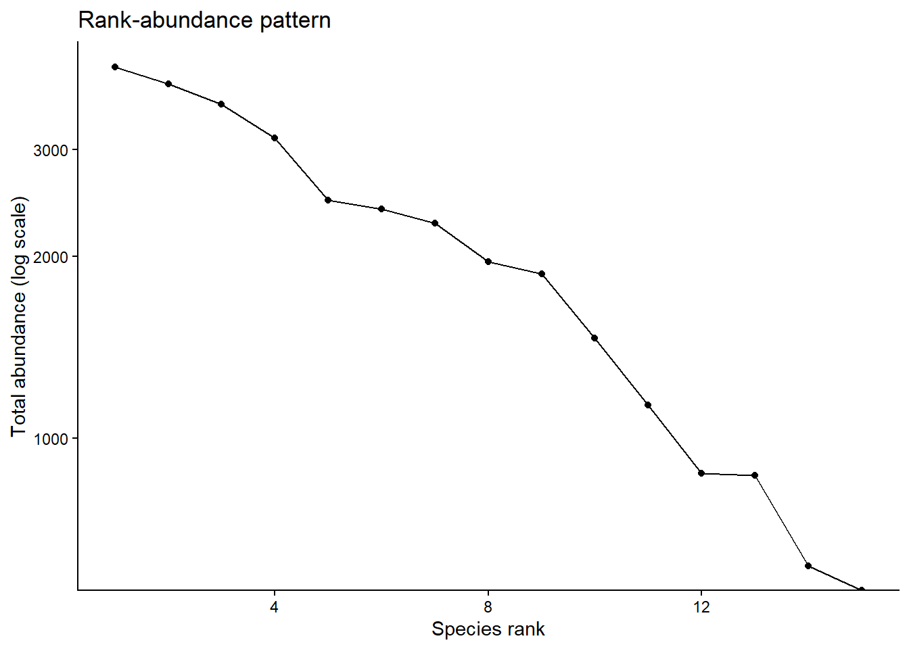
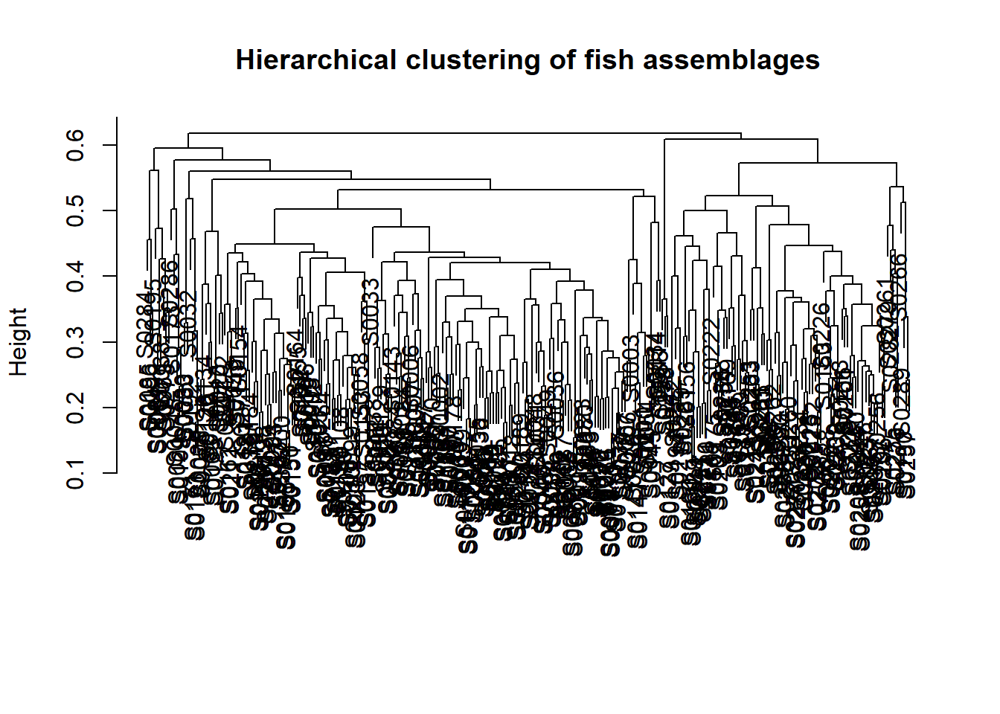
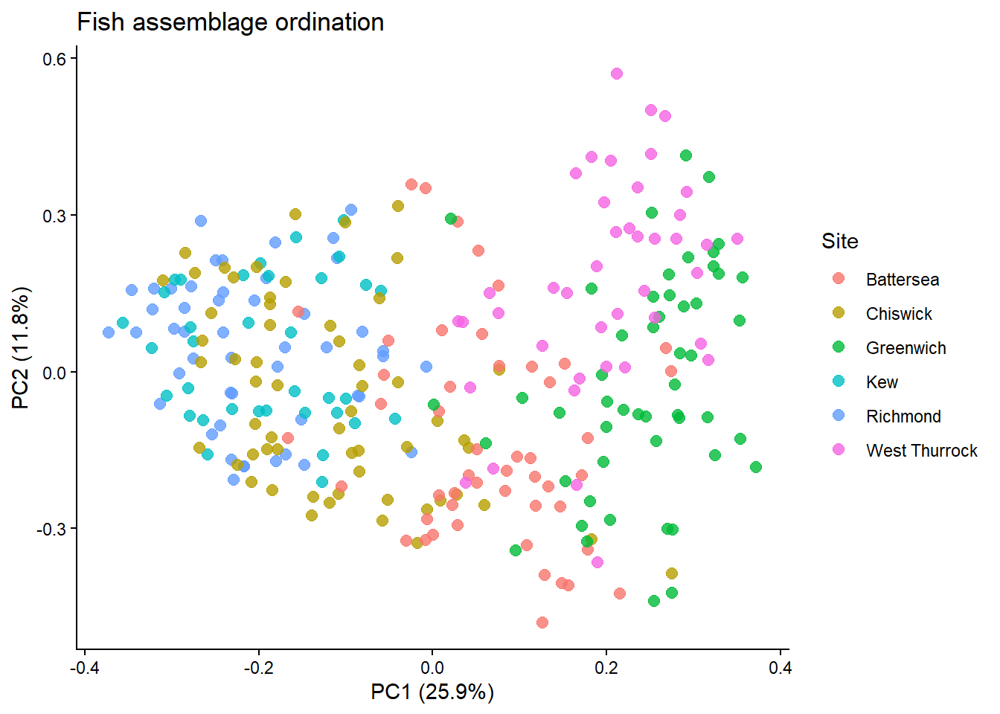
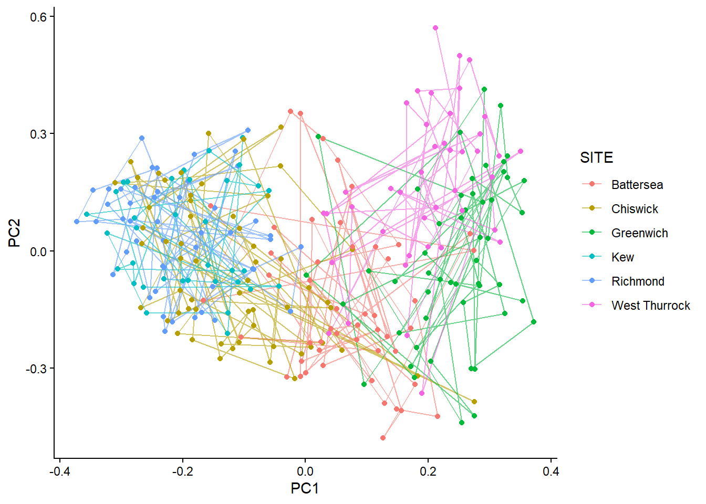

library(readr)
library(dplyr)
library(tidyr)
library(ggplot2)
library(vegan)
library(ggrepel)
library(patchwork)Community ecology analysis in R
About this tutorial
This tutorial is structured largely around the learning progression in Mark Gardener’s Community Ecology: Analytical Methods Using R and Excel.
The book moves from:
scientific question → biological records → data exploration → diversity → similarity → association → ordination
That progression is retained here because it is an excellent way to learn how community ecologists think, rather than simply memorising individual R commands.
A final section adds methods that are especially relevant to contemporary ecological community analysis and to long-term monitoring data:
- Hellinger transformation;
- Bray-Curtis dissimilarity;
- PCA and NMDS;
- PERMANOVA;
- PERMDISP;
- restricted permutations;
- environmental associations;
- temporal trajectories.
NoteMain learning goal
- what ecological question is being asked;
- what the sampling unit is;
- what information the community matrix contains;
- which analytical family addresses the question;
- what the method actually tests;
- what conclusions are and are not supported.
Community ecology as a scientific process
Begin with the scientific process.
A useful simplified cycle is:
idea → hypothesis/question → sampling design → biological records → exploration → analysis → interpretation → reporting → new questions
Community ecology follows the same logic as any other science, but the data are often complicated because many species are measured simultaneously.
Planning, recording, analysing and reporting
A community-ecology study can be divided into four broad stages:
| Stage | Main question |
|---|---|
| Planning | What ecological idea or question am I trying to investigate? |
| Recording | What observations must I collect so the question can be addressed? |
| Analysing | Which analytical approach is appropriate for these data and this question? |
| Reporting | What does the evidence support, and how clearly can I communicate it? |
Questions versus hypotheses
Not every community analysis is a classical hypothesis test.
Some analyses are explicitly inferential:
Does fish assemblage composition differ among monitoring sites?
Others are initially exploratory:
What are the main gradients in fish assemblage composition?
Both are scientifically useful.
The important point is to know which kind of question is being asked.
Four major themes in community analysis
Community analysis can be organised into four major analytical themes:
Diversity
How many species are present, and how evenly are individuals distributed among them?
Similarity and clustering
How similar are samples in species composition, and can samples be grouped into meaningful clusters?
Association and indicator species
Which species tend to occur together, and are particular taxa strongly associated with particular communities or habitats?
Ordination
Can a high-dimensional community dataset be represented in a small number of dimensions so that ecological patterns become visible?
These themes overlap, but keeping them conceptually separate makes method choice much easier.

Software and packages
For this tutorial:
Optional later packages may include:
# install.packages("indicspecies")
# library(indicspecies)Biological records: who, what, where and when
For ecological monitoring, think in terms of:
- what was recorded: species and abundance;
- where it was recorded: site;
- when it was recorded: date/year/month;
- how it was recorded: method/gear;
- which sampling event the record belongs to.
For fish monitoring, a useful raw long-format structure is:
| SURVEY_ID | SITE | YEAR | MONTH | SPECIES_NAME | FISH_COUNT |
|---|---|---|---|---|---|
| S001 | Richmond | 1992 | 9 | Smelt | 12 |
| S001 | Richmond | 1992 | 9 | Flounder | 3 |
| S002 | Kew | 1992 | 9 | Smelt | 7 |
Each row is one biological record.
Each column represents one variable.
Example data
fish_raw <- read_csv("dummy_fish_survey_data.csv")Begin with exploration, not analysis
Before performing multivariate analysis, inspect the data critically.
- check for errors;
- check that data are arranged sensibly;
- add useful supporting information;
- obtain numerical summaries;
- create graphical summaries.
Check structure
glimpse(fish_raw)Rows: 2,561
Columns: 14
$ SURVEY_ID <chr> "S0001", "S0001", "S0001", "S0001", "S0001", "S0…
$ EVENT_ID <chr> "E0001", "E0001", "E0001", "E0001", "E0001", "E0…
$ SITE <chr> "Richmond", "Richmond", "Richmond", "Richmond", …
$ YEAR <dbl> 1992, 1992, 1992, 1992, 1992, 1992, 1992, 1992, …
$ MONTH <chr> "Sep", "Sep", "Sep", "Sep", "Sep", "Sep", "Sep",…
$ REPLICATE <dbl> 1, 1, 1, 1, 1, 1, 1, 1, 1, 1, 1, 1, 2, 2, 2, 2, …
$ METHOD <chr> "Seine Net", "Seine Net", "Seine Net", "Seine Ne…
$ SPECIES_NAME <chr> "Common bream", "European eel", "Thin-lipped mul…
$ FISH_COUNT <dbl> 42, 10, 1, 11, 1, 9, 15, 2, 47, 36, 42, 4, 24, 2…
$ ZERO_CATCH <chr> "No", "No", "No", "No", "No", "No", "No", "No", …
$ TEMPERATURE_C <dbl> 16.34, 16.34, 16.34, 16.34, 16.34, 16.34, 16.34,…
$ SALINITY_PSU <dbl> 0.00, 0.00, 0.00, 0.00, 0.00, 0.00, 0.00, 0.00, …
$ DISSOLVED_OXYGEN_MG_L <dbl> 7.31, 7.31, 7.31, 7.31, 7.31, 7.31, 7.31, 7.31, …
$ HABITAT_COVER_PROP <dbl> 0.363, 0.363, 0.363, 0.363, 0.363, 0.363, 0.363,…names(fish_raw) [1] "SURVEY_ID" "EVENT_ID" "SITE"
[4] "YEAR" "MONTH" "REPLICATE"
[7] "METHOD" "SPECIES_NAME" "FISH_COUNT"
[10] "ZERO_CATCH" "TEMPERATURE_C" "SALINITY_PSU"
[13] "DISSOLVED_OXYGEN_MG_L" "HABITAT_COVER_PROP" summary(fish_raw) SURVEY_ID EVENT_ID SITE YEAR
Length :2561 Length :2561 Length :2561 Min. :1992
N.unique : 290 N.unique : 184 N.unique : 6 1st Qu.:1999
N.blank : 0 N.blank : 0 N.blank : 0 Median :2007
Min.nchar: 5 Min.nchar: 5 Min.nchar: 3 Mean :2008
Max.nchar: 5 Max.nchar: 5 Max.nchar: 13 3rd Qu.:2016
Max. :2025
MONTH REPLICATE METHOD SPECIES_NAME
Length :2561 Min. :1.000 Length :2561 Length :2561
N.unique : 7 1st Qu.:1.000 N.unique : 1 N.unique : 15
N.blank : 0 Median :1.000 N.blank : 0 N.blank : 0
Min.nchar: 3 Mean :1.392 Min.nchar: 9 Min.nchar: 3
Max.nchar: 3 3rd Qu.:2.000 Max.nchar: 9 Max.nchar: 18
Max. :3.000 NAs : 4
FISH_COUNT ZERO_CATCH TEMPERATURE_C SALINITY_PSU
Min. : 0.00 Length :2561 Min. : 9.25 Min. : 0.00
1st Qu.: 3.00 N.unique : 2 1st Qu.:14.72 1st Qu.: 5.71
Median : 7.00 N.blank : 0 Median :16.23 Median :10.33
Mean : 11.95 Min.nchar: 2 Mean :16.08 Mean :12.19
3rd Qu.: 15.00 Max.nchar: 3 3rd Qu.:17.50 3rd Qu.:19.03
Max. :155.00 Max. :21.52 Max. :29.87
DISSOLVED_OXYGEN_MG_L HABITAT_COVER_PROP
Min. : 4.830 Min. :0.0500
1st Qu.: 6.840 1st Qu.:0.3090
Median : 7.310 Median :0.3950
Mean : 7.325 Mean :0.3851
3rd Qu.: 7.800 3rd Qu.:0.4590
Max. :10.430 Max. :0.6710 Check missing values
colSums(is.na(fish_raw)) SURVEY_ID EVENT_ID SITE
0 0 0
YEAR MONTH REPLICATE
0 0 0
METHOD SPECIES_NAME FISH_COUNT
0 4 0
ZERO_CATCH TEMPERATURE_C SALINITY_PSU
0 0 0
DISSOLVED_OXYGEN_MG_L HABITAT_COVER_PROP
0 0 Check species-name consistency
sort(unique(fish_raw$SPECIES_NAME)) [1] "Common bream" "Common goby" "Common minnow"
[4] "Common roach" "Dace" "European eel"
[7] "European flounder" "European perch" "European plaice"
[10] "European seabass" "N/A" "Pikeperch"
[13] "Sand smelt" "Smelt" "Thin-lipped mullet"Typical problems include:
- spelling variants;
- trailing spaces;
- inconsistent capitalisation;
- grouped taxa;
- hybrids;
- unresolved taxa.
For example:
fish_raw <- fish_raw %>%
mutate(SPECIES_NAME = trimws(SPECIES_NAME))Check sampling coverage
fish_raw %>%
distinct(SURVEY_ID, SITE, YEAR, MONTH) %>%
count(SITE, YEAR)# A tibble: 154 × 3
SITE YEAR n
<chr> <dbl> <int>
1 Battersea 1993 2
2 Battersea 1994 2
3 Battersea 1995 3
4 Battersea 1996 2
5 Battersea 1997 3
6 Battersea 1998 2
7 Battersea 1999 2
8 Battersea 2000 3
9 Battersea 2002 1
10 Battersea 2004 2
# ℹ 144 more rowsVisualise temporal coverage:
survey_coverage <- fish_raw %>%
distinct(SURVEY_ID, SITE, YEAR) %>%
count(SITE, YEAR)
ggplot(
survey_coverage,
aes(x = YEAR, y = SITE, size = n)) +
geom_point() +
labs(
x = "Year",
y = "Site",
size = "Surveys",
title = "Sampling coverage through time") +
theme_classic()
Choose the analytical family from the question
A simplified decision map is:
| Ecological question | Analytical family |
|---|---|
| How many species are present? | Species richness |
| How even is the community? | Diversity indices / rank-abundance |
| How different are two or more assemblages? | Similarity / dissimilarity |
| Which samples form groups? | Cluster analysis |
| Which species tend to occur together? | Association analysis |
| Which species characterise a group? | Indicator species |
| What are the major community gradients? | Ordination |
| Do groups or predictors differ formally in composition? | PERMANOVA |
| Are community differences associated with measured environment? | Direct ordination / environmental fitting |
From biological records to a community matrix
Most community methods require a sample × species matrix.
- rows = sampling units;
- columns = species;
- cells = abundance or occurrence.
Define the sampling unit
Before building the matrix, decide what one row means.
Examples:
- one survey;
- one site-date event;
- one site-year;
- one site-year-season.
Ask:
What is the biologically meaningful independent sampling unit for my question?
Create the survey universe
survey_universe <- fish_raw %>%
distinct(SURVEY_ID, SITE, YEAR, MONTH)
nrow(survey_universe)[1] 290anyDuplicated(survey_universe$SURVEY_ID)[1] 0The survey universe preserves the distinction between:
- a survey that occurred and caught no fish;
- a survey that never occurred.
Taxonomic cleaning
excluded_taxa <- c(
"Goby sp.",
"Grey mullet sp.",
"Sandeel sp.",
"Stickleback sp.")
community_long <- fish_raw %>%
filter(
!is.na(SPECIES_NAME),
!SPECIES_NAME %in% excluded_taxa
)Build the community matrix
community_counts <- community_long %>%
group_by(SURVEY_ID, SPECIES_NAME) %>%
summarise(Abundance = sum(FISH_COUNT, na.rm = TRUE),
.groups = "drop")
community_wide <- community_counts %>%
pivot_wider(
names_from = SPECIES_NAME,
values_from = Abundance,
values_fill = 0)Inspect:
community_wide# A tibble: 286 × 16
SURVEY_ID `Common bream` `Common goby` `Common minnow` `Common roach` Dace
<chr> <dbl> <dbl> <dbl> <dbl> <dbl>
1 S0001 42 9 36 47 4
2 S0002 24 17 11 0 9
3 S0003 0 12 55 0 2
4 S0004 8 0 66 24 5
5 S0005 16 4 31 23 10
6 S0006 27 11 25 124 33
7 S0007 10 0 2 99 14
8 S0008 8 1 12 27 10
9 S0009 0 0 7 0 15
10 S0010 33 28 3 67 6
# ℹ 276 more rows
# ℹ 10 more variables: `European eel` <dbl>, `European flounder` <dbl>,
# `European perch` <dbl>, `European plaice` <dbl>, Pikeperch <dbl>,
# Smelt <dbl>, `Thin-lipped mullet` <dbl>, `European seabass` <dbl>,
# `Sand smelt` <dbl>, `N/A` <dbl>Keep metadata separate
community_metadata <- survey_universe %>%
semi_join(
community_wide,
by = "SURVEY_ID") %>%
arrange(SURVEY_ID)
community_wide <- community_wide %>%
arrange(SURVEY_ID)
community_species <- community_wide %>%
select(-SURVEY_ID) %>%
as.data.frame()
rownames(community_species) <- community_wide$SURVEY_ID
identical(
community_metadata$SURVEY_ID,
rownames(community_species))[1] TRUEThe result should be:
TRUEDiversity: what is inside each sample?
- species richness: number of species;
- evenness/diversity indices: richness plus relative abundances;
- alpha diversity: diversity within a sampling unit;
- beta diversity: change in composition among sampling units;
- gamma diversity: diversity at a larger regional scale.
Species richness
Species richness is simply the number of species detected in a sample.
Using vegan:
sample_richness <- specnumber(community_species)
summary(sample_richness) Min. 1st Qu. Median Mean 3rd Qu. Max.
0.000 8.000 9.000 8.937 10.000 14.000 Or manually:
sample_richness_manual <- rowSums(community_species > 0)
identical(
as.numeric(sample_richness),
as.numeric(sample_richness_manual))[1] TRUERichness answers:
How many species were present?
Diversity indices
Two common indices are Shannon and Simpson diversity. They are not interchangeable with richness.
Shannon diversity
shannon <- diversity(
community_species,
index = "shannon")
summary(shannon) Min. 1st Qu. Median Mean 3rd Qu. Max.
0.000 1.554 1.771 1.721 1.916 2.414 Shannon diversity increases when:
- more species are present;
- abundances are distributed more evenly.
Simpson diversity
simpson <- diversity(
community_species,
index = "simpson")
summary(simpson) Min. 1st Qu. Median Mean 3rd Qu. Max.
0.4290 0.7232 0.7832 0.7641 0.8210 1.0000 Different formulations of Simpson’s index exist, so always report exactly which definition or software implementation was used.
Richness versus diversity index
Imagine two samples:
Sample A:
Species 1 = 97
Species 2 = 1
Species 3 = 1
Species 4 = 1
Sample B:
Species 1 = 25
Species 2 = 25
Species 3 = 25
Species 4 = 25Both have richness = 4.
But Sample B is much more even.
A diversity index can distinguish them.
Rank-abundance and dominance
A simple rank-abundance plot is often more intuitive than a single diversity index.
species_totals <- colSums(community_species)
rank_abundance <- data.frame(
Species = names(species_totals),
Abundance = as.numeric(species_totals)) %>%
arrange(desc(Abundance)) %>%
mutate(Rank = row_number())
ggplot(
rank_abundance,
aes(x = Rank, y = Abundance)) +
geom_point() +
geom_line() +
scale_y_log10() +
labs(
x = "Species rank",
y = "Total abundance (log scale)",
title = "Rank-abundance pattern") +
theme_classic()
Interpretation:
- a steep curve indicates strong dominance by a few species;
- a flatter curve indicates greater evenness.
Diversity across sampling scales
Alpha diversity
Within-sample diversity.
Example:
Richness within one seine net survey.
Beta diversity
Variation in composition among samples.
Beta diversity asks:
How much does the assemblage change from one sample, habitat, site or time period to another?
Gamma diversity
Total diversity at the broader study extent.
Example:
All fish species detected across the six monitoring sites.
Similarity and dissimilarity
Similarity asks how alike samples are.
Dissimilarity asks how different they are.
These are two ways of expressing the same broad idea.
The choice of measure matters because different metrics emphasise different properties of the data.
Prepare the matrix for multivariate analysis
Before calculating dissimilarities or performing ordination, check for zero-sum samples.
A zero-sum sample is a row for which all retained species abundances are zero.
sample_totals <- rowSums(community_species)
table(Zero_sum_sample = sample_totals == 0)Zero_sum_sample
FALSE TRUE
285 1 This matters because transformations such as Hellinger divide each abundance by the total abundance of that sample. If the row total is zero, this involves division by zero and produces missing or non-finite values.
Bray-Curtis also cannot represent the composition of an empty assemblage in the same way as a sample containing species.
Therefore, retain these surveys in the survey universe for auditing, but create a separate matrix containing only non-empty samples for analyses of community composition.
non_empty <- sample_totals > 0
community_species_mv <- community_species[
non_empty,
,
drop = FALSE
]
community_metadata_mv <- community_metadata %>%
filter(
SURVEY_ID %in%
rownames(community_species_mv)) %>%
arrange(
match(
SURVEY_ID,
rownames(community_species_mv)))
nrow(community_species)[1] 286nrow(community_species_mv)[1] 285
NoteWhy not simply delete zero catches from the raw data?
A genuine zero-catch survey is ecologically meaningful and should remain in the record of sampling effort.
Transform abundance before comparing communities
A few highly abundant fish species can dominate the community matrix.
Transformations reduce that dominance.
Square-root transformation
community_sqrt <- sqrt(community_species_mv)This is often useful before Bray-Curtis analysis.
Hellinger transformation
community_hellinger <- decostand(
community_species_mv,
method = "hellinger")
# Safety check before PCA
all(is.finite(as.matrix(community_hellinger)))[1] TRUEThe final check should return:
TRUEConceptually:
\[ h_{ij} = \sqrt{ \frac{x_{ij}} {\sum_j x_{ij}} } \]
The Hellinger transformation is especially useful before Euclidean methods such as PCA.
Bray-Curtis dissimilarity
community_bray <- vegdist(
community_sqrt,
method = "bray")Bray-Curtis is widely used in community ecology because:
- it uses abundance information;
- joint absences do not make samples more similar;
- it works well with sparse ecological matrices.
Values are broadly interpreted as:
0 → highly similar / identical
1 → highly dissimilarCluster analysis
Which samples group together because their assemblages are compositionally similar?
Hierarchical clustering
community_cluster <- hclust(
community_bray,
method = "average")
plot(
community_cluster,
main = "Hierarchical clustering of fish assemblages",
xlab = "",
sub = "")
The dendrogram represents relationships among samples.
Samples joining at short branch lengths are more similar than samples joining farther apart.
Clustering is exploratory
A dendrogram is not automatically proof that discrete ecological communities exist.
Clusters can arise along continuous gradients.
This distinction is especially important in estuaries.
Association analysis
Which species occur together more often than expected?
This can reveal:
- positive association;
- negative association;
- groups of co-occurring taxa;
- potential indicator species.
Presence-absence data are often especially useful for this question.
Convert abundance to presence-absence
community_pa <- decostand(
community_species_mv,
method = "pa")
community_pa[1:5, 1:5] Common bream Common goby Common minnow Common roach Dace
S0001 1 1 1 1 1
S0002 1 1 1 0 1
S0003 0 1 1 0 1
S0004 1 0 1 1 1
S0005 1 1 1 1 1Indicator species
An indicator species is strongly associated with a particular habitat, group or community.
In modern R, one common approach uses the indicspecies package.
# library(indicspecies)
#
# indicator_result <- multipatt(
# community_species_mv,
# community_metadata_mv$SITE,
# control = how(nperm = 999))
#
# summary(indicator_result)Interpret indicator results cautiously.
A useful indicator should normally have ecological meaning as well as statistical support.
Ordination: simplifying complicated community data
Ordination is one of the central themes of community ecology.
The purpose is to compress many species dimensions into a small number of axes so that major compositional patterns can be visualised.
If points are close together:
their assemblages are relatively similar.
If points are far apart:
their assemblages are more different.
Indirect versus direct gradient analysis
Indirect gradient analysis
Only the community data determine the ordination.
Environmental gradients are interpreted afterwards.
Examples include:
- PCA;
- PCoA;
- NMDS;
- correspondence analysis;
- detrended correspondence analysis.
Direct gradient analysis
Environmental variables are incorporated directly into the ordination.
Examples include:
- redundancy analysis (RDA);
- canonical correspondence analysis (CCA).
The distinction is fundamental:
Indirect:
community first → interpret environment afterwards
Direct:
community + environment togetherChoosing an ordination method
A simplified modern comparison:
| Method | Type | Useful feature |
|---|---|---|
| PCA | Indirect | Species and sample scores; linear Euclidean structure |
| PCoA | Indirect | Can start from many dissimilarity measures |
| NMDS | Indirect | Flexible dissimilarities; rank-based |
| CA | Indirect | Species and sample scores; chi-square geometry |
| DCA | Indirect | Designed to reduce arch effects in CA |
| RDA | Direct | Linear constrained ordination |
| CCA | Direct | Unimodal constrained ordination |
There is no method that is automatically correct for every community dataset.
PCA with Hellinger-transformed data
Before fitting PCA, verify that the transformed matrix contains no NA, NaN or infinite values:
sum(
!is.finite(
as.matrix(community_hellinger)))[1] 0This should return 0.
For the present fish example:
community_pca <- rda(community_hellinger)
summary(community_pca)
Call:
rda(X = community_hellinger)
Partitioning of variance:
Inertia Proportion
Total 0.4758 1
Unconstrained 0.4758 1
Eigenvalues, and their contribution to the variance
Importance of components:
PC1 PC2 PC3 PC4 PC5 PC6 PC7
Eigenvalue 0.1235 0.05637 0.0494 0.04465 0.03515 0.03155 0.02779
Proportion Explained 0.2595 0.11847 0.1038 0.09382 0.07386 0.06630 0.05840
Cumulative Proportion 0.2595 0.37795 0.4818 0.57559 0.64946 0.71576 0.77416
PC8 PC9 PC10 PC11 PC12 PC13 PC14
Eigenvalue 0.02502 0.02217 0.01740 0.01594 0.01221 0.009235 0.005499
Proportion Explained 0.05257 0.04659 0.03657 0.03349 0.02566 0.019408 0.011557
Cumulative Proportion 0.82673 0.87332 0.90988 0.94337 0.96903 0.988443 1.000000Because no explanatory variables are supplied, rda() here performs PCA.
Percentage variance explained
pca_eigenvalues <- eigenvals(community_pca)
pca_percent <- 100 *
pca_eigenvalues /
sum(pca_eigenvalues)
pca_percent PC1 PC2 PC3 PC4 PC5 PC6 PC7 PC8
25.947467 11.847214 10.382260 9.382474 7.386356 6.630308 5.839543 5.257392
PC9 PC10 PC11 PC12 PC13 PC14
4.658754 3.656581 3.348828 2.566272 1.940834 1.155718 Sample scores
pca_sites <- scores(
community_pca,
display = "sites") %>%
as.data.frame()
pca_sites$SURVEY_ID <-
rownames(pca_sites)
pca_sites <- pca_sites %>%
left_join(
community_metadata_mv,
by = "SURVEY_ID")Plot PCA
ggplot(
pca_sites,
aes(x = PC1, y = PC2, colour = SITE)) +
geom_point(size = 2.5, alpha = 0.8) +
labs(
x = paste0(
"PC1 (",
round(pca_percent[1], 1),
"%)"),
y = paste0(
"PC2 (",
round(pca_percent[2], 1),
"%)"),
colour = "Site",
title = "Fish assemblage ordination") +
theme_classic()
How to read an ordination critically
Ask in this order:
- Are there obvious clusters or gradients?
- Which sites overlap?
- Which sites separate?
- Is there temporal movement?
- Which species contribute to separation?
- Could the apparent pattern be produced by a few dominant taxa?
- Does an environmental interpretation require additional evidence?
A common mistake is to name the axes too quickly.
Bad:
PC1 is salinity.
Better:
PC1 separates upstream and downstream assemblages and is consistent with the longitudinal environmental gradient; salinity is a plausible component of that gradient.
Species scores
pca_species <- scores(
community_pca,
display = "species") %>%
as.data.frame()
pca_species$SPECIES_NAME <-rownames(pca_species)Find strong contributors:
pca_species %>%
arrange(
desc(abs(PC1))) %>%
head(10) PC1 PC2 SPECIES_NAME
Common roach -0.7531763 0.21683131 Common roach
Sand smelt 0.6800943 0.69600460 Sand smelt
Smelt 0.5971102 -0.18940036 Smelt
Common minnow -0.5887031 -0.09445037 Common minnow
European perch -0.5008452 -0.07339448 European perch
Dace -0.4977183 -0.02668701 Dace
Common bream -0.4372775 0.14729733 Common bream
Thin-lipped mullet 0.3773277 -0.01546036 Thin-lipped mullet
European flounder 0.3738221 -0.11793268 European flounder
European seabass 0.3666816 0.13254769 European seabassand:
pca_species %>%
arrange(
desc(abs(PC2))) %>%
head(10) PC1 PC2 SPECIES_NAME
Common goby 0.3416186 -0.82480578 Common goby
Sand smelt 0.6800943 0.69600460 Sand smelt
Common roach -0.7531763 0.21683131 Common roach
Smelt 0.5971102 -0.18940036 Smelt
European eel -0.0039340 -0.16942924 European eel
European plaice 0.2167917 0.16273568 European plaice
Common bream -0.4372775 0.14729733 Common bream
European seabass 0.3666816 0.13254769 European seabass
European flounder 0.3738221 -0.11793268 European flounder
Common minnow -0.5887031 -0.09445037 Common minnowNMDS
NMDS starts from a dissimilarity matrix and attempts to preserve the rank ordering of distances.
set.seed(123)
community_nmds <- metaMDS(
community_sqrt,
distance = "bray",
k = 2,
trymax = 100)Wisconsin double standardization
Run 0 stress 0.2523676
Run 1 stress 0.2534946
Run 2 stress 0.2584566
Run 3 stress 0.2556449
Run 4 stress 0.2533505
Run 5 stress 0.2549063
Run 6 stress 0.2644634
Run 7 stress 0.2567823
Run 8 stress 0.2626491
Run 9 stress 0.262196
Run 10 stress 0.2550899
Run 11 stress 0.2567774
Run 12 stress 0.2575443
Run 13 stress 0.2602901
Run 14 stress 0.2575551
Run 15 stress 0.2623182
Run 16 stress 0.2559345
Run 17 stress 0.2578107
Run 18 stress 0.2609
Run 19 stress 0.2562739
Run 20 stress 0.2642018
Run 21 stress 0.2626658
Run 22 stress 0.2529714
Run 23 stress 0.2590871
Run 24 stress 0.254608
Run 25 stress 0.2606356
Run 26 stress 0.2606169
Run 27 stress 0.2556752
Run 28 stress 0.2635608
Run 29 stress 0.257441
Run 30 stress 0.2612713
Run 31 stress 0.2590768
Run 32 stress 0.2643692
Run 33 stress 0.2580698
Run 34 stress 0.2592308
Run 35 stress 0.2611827
Run 36 stress 0.2605937
Run 37 stress 0.2662689
Run 38 stress 0.2555672
Run 39 stress 0.2594104
Run 40 stress 0.2580127
Run 41 stress 0.2571892
Run 42 stress 0.2597391
Run 43 stress 0.2605853
Run 44 stress 0.2641074
Run 45 stress 0.264576
Run 46 stress 0.2576322
Run 47 stress 0.2677235
Run 48 stress 0.2630573
Run 49 stress 0.2637282
Run 50 stress 0.2603726
Run 51 stress 0.2658438
Run 52 stress 0.2610512
Run 53 stress 0.257407
Run 54 stress 0.2664395
Run 55 stress 0.2607611
Run 56 stress 0.2604866
Run 57 stress 0.2559109
Run 58 stress 0.2575409
Run 59 stress 0.2599358
Run 60 stress 0.2616681
Run 61 stress 0.2637577
Run 62 stress 0.2640834
Run 63 stress 0.2623179
Run 64 stress 0.2585394
Run 65 stress 0.2598862
Run 66 stress 0.2588345
Run 67 stress 0.2553512
Run 68 stress 0.2580849
Run 69 stress 0.2638207
Run 70 stress 0.263233
Run 71 stress 0.2619441
Run 72 stress 0.2663235
Run 73 stress 0.2635772
Run 74 stress 0.2602879
Run 75 stress 0.2573028
Run 76 stress 0.2547336
Run 77 stress 0.2625016
Run 78 stress 0.2536668
Run 79 stress 0.2596339
Run 80 stress 0.2619118
Run 81 stress 0.2693711
Run 82 stress 0.2568743
Run 83 stress 0.2599066
Run 84 stress 0.2614603
Run 85 stress 0.256453
Run 86 stress 0.2573702
Run 87 stress 0.4180052
Run 88 stress 0.2667493
Run 89 stress 0.2573555
Run 90 stress 0.2610651
Run 91 stress 0.2654072
Run 92 stress 0.257845
Run 93 stress 0.2588914
Run 94 stress 0.2610832
Run 95 stress 0.2556751
Run 96 stress 0.2586026
Run 97 stress 0.258636
Run 98 stress 0.2558308
Run 99 stress 0.2584572
Run 100 stress 0.2687315
*** Best solution was not repeated -- monoMDS stopping criteria:
17: no. of iterations >= maxit
82: stress ratio > sratmax
1: scale factor of the gradient < sfgrmincommunity_nmds$stress[1] 0.2523676A rough guide:
| Stress | Interpretation |
|---|---|
| < 0.05 | Excellent representation |
| < 0.10 | Good |
| 0.10-0.20 | Often useful |
| > 0.20 | Interpret cautiously |
Stress is not a pass/fail threshold.
PCA versus NMDS
PCA and NMDS answer related but not identical questions.
PCA summarises variance along orthogonal axes; NMDS seeks a low-dimensional configuration that preserves the ranks of dissimilarities.
PCA:
- works in Euclidean space;
- provides variance explained;
- provides species scores naturally;
- works well with Hellinger-transformed community data.
NMDS:
- can use Bray-Curtis;
- is based on ranks of dissimilarity;
- can handle nonlinear community patterns well;
- requires inspection of stress.
Use ecological reasoning rather than choosing the method that gives the “nicest” plot.
Temporal trajectories
Ordination can also describe how communities move through time.
ggplot(
pca_sites,
aes(x = PC1, y = PC2, colour = SITE, group = SITE)) +
geom_path(data = pca_sites %>%
arrange(SITE, YEAR), alpha = 0.6) +
geom_point() +
theme_classic()
This asks:
Do monitoring sites move through community space in similar or different ways?
Modern extension: formal multivariate inference
The most important tool here is PERMANOVA.
PERMANOVA
PERMANOVA stands for Permutational Multivariate Analysis of Variance.
It tests whether multivariate community composition differs among predictors.
Prepare predictors:
community_metadata_mv <- community_metadata_mv %>%
mutate(
SITE = factor(SITE),
YEAR_CENTERED =
YEAR -
mean(YEAR, na.rm = TRUE))Fit:
permanova_model <- adonis2(
community_bray ~
SITE *
YEAR_CENTERED,
data = community_metadata_mv,
permutations = 999)
permanova_modelPermutation test for adonis under reduced model
Permutation: free
Number of permutations: 999
adonis2(formula = community_bray ~ SITE * YEAR_CENTERED, data = community_metadata_mv, permutations = 999)
Df SumOfSqs R2 F Pr(>F)
Model 11 14.289 0.31228 11.269 0.001 ***
Residual 273 31.467 0.68772
Total 284 45.756 1.00000
---
Signif. codes: 0 '***' 0.001 '**' 0.01 '*' 0.05 '.' 0.1 ' ' 1Interpreting PERMANOVA
SITE asks:
Does assemblage composition differ among monitoring locations?
YEAR_CENTERED asks:
Does assemblage composition change through time?
SITE:YEAR_CENTERED asks:
Does temporal change differ among locations?
Important output:
| Output | Meaning |
|---|---|
Df |
Degrees of freedom |
SumOfSqs |
Variation associated with the term |
R2 |
Proportion of multivariate variation explained |
F |
Pseudo-F statistic |
Pr(>F) |
Permutation p-value |
A result such as:
Site R² = 0.32
Year R² = 0.02would mean spatial structure is much stronger than the overall temporal signal.
That does not make the temporal effect unimportant.
It says that temporal change occurs within a strongly spatially structured estuary.
Permutation logic
PERMANOVA obtains significance by permutation.
Conceptually:
observed community matrix
↓
calculate pseudo-F
↓
shuffle labels under the null
↓
recalculate pseudo-F
↓
repeat many times
↓
compare observed F with null distributionThe exchangeability of observations is therefore crucial.
Restricted permutations
If observations are repeated or nested, not all permutations are valid.
For example:
- repeated surveys within site;
- repeated surveys within site-year;
- blocks;
- matched samples.
The permutation scheme should reflect the design.
PERMDISP: group spread versus group centre
A significant PERMANOVA can arise partly because groups differ in dispersion.
PERMDISP asks:
Do groups differ in their average distance to a group centre (centroid or spatial median, depending on
betadisper()settings)?
site_dispersion <- betadisper(
community_bray,
community_metadata_mv$SITE)
anova(site_dispersion)Analysis of Variance Table
Response: Distances
Df Sum Sq Mean Sq F value Pr(>F)
Groups 5 0.06801 0.0136027 1.8712 0.09943 .
Residuals 279 2.02817 0.0072694
---
Signif. codes: 0 '***' 0.001 '**' 0.01 '*' 0.05 '.' 0.1 ' ' 1permutest(
site_dispersion,
permutations = 999)
Permutation test for homogeneity of multivariate dispersions
Permutation: free
Number of permutations: 999
Response: Distances
Df Sum Sq Mean Sq F N.Perm Pr(>F)
Groups 5 0.06801 0.0136027 1.8712 999 0.089 .
Residuals 279 2.02817 0.0072694
---
Signif. codes: 0 '***' 0.001 '**' 0.01 '*' 0.05 '.' 0.1 ' ' 1Interpret together:
PERMANOVA significant
PERMDISP non-significant
→ stronger evidence of centroid differences
PERMANOVA significant
PERMDISP significant
→ location and spread may both contributeWorked interpretation: three ideas that must not be conflated
PCA describes major variance gradients in the transformed community matrix. PERMANOVA tests associations between community differences and predictors using a pseudo-F statistic and permutations. PERMDISP tests differences in within-group multivariate spread. PCA separation alone is not a statistical test; PERMANOVA significance is not proof of causation or of centroid differences when dispersions differ.
Glossary
| Term | Meaning |
|---|---|
| Community / assemblage | Multiple species considered together |
| Sampling unit | Biological unit represented by one independent row |
| Community matrix | Samples × species table |
| Species richness | Number of species |
| Evenness | Similarity of abundances among species |
| Alpha diversity | Diversity within a sample or local unit |
| Beta diversity | Change in composition among samples |
| Gamma diversity | Diversity at the broader study extent |
| Similarity | Degree to which samples resemble one another |
| Dissimilarity | Degree to which samples differ |
| Bray-Curtis | Common abundance-based ecological dissimilarity |
| Cluster analysis | Grouping samples according to similarity |
| Association analysis | Analysis of species co-occurrence |
| Indicator species | Taxon strongly associated with a group or habitat |
| Ordination | Low-dimensional representation of multivariate data |
| Indirect gradient analysis | Ordination based on community data alone |
| Direct gradient analysis | Ordination constrained by environmental variables |
| PCA | Principal Components Analysis |
| PCoA | Principal Coordinates Analysis |
| NMDS | Non-metric Multidimensional Scaling |
| RDA | Redundancy Analysis |
| CCA | Canonical Correspondence Analysis |
| PERMANOVA | Permutation-based test of multivariate composition |
| PERMDISP | Test of multivariate dispersion |
| Centroid | Multivariate centre of a group |
| Permutation | Rearrangement used to construct a null distribution |
| Species score | Species position/loading in ordination space |
| Sample score | Sample position in ordination space |
References
Primary conceptual structure:
- Gardener, M. (2014). Community Ecology: Analytical Methods Using R and Excel. Pelagic Publishing.
Useful complementary references:
- Borcard, D., Gillet, F. & Legendre, P. Numerical Ecology with R.
- Legendre, P. & Legendre, L. Numerical Ecology.
- Oksanen, J. et al.
veganpackage documentation.